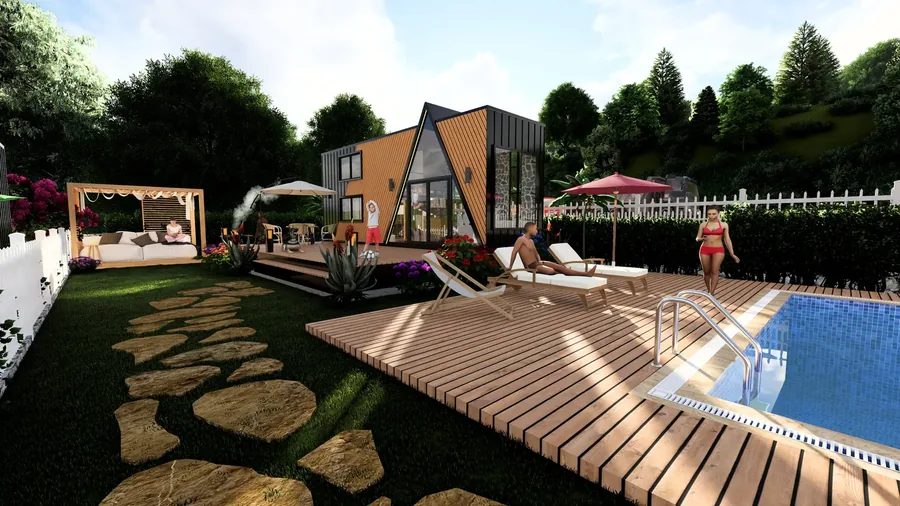
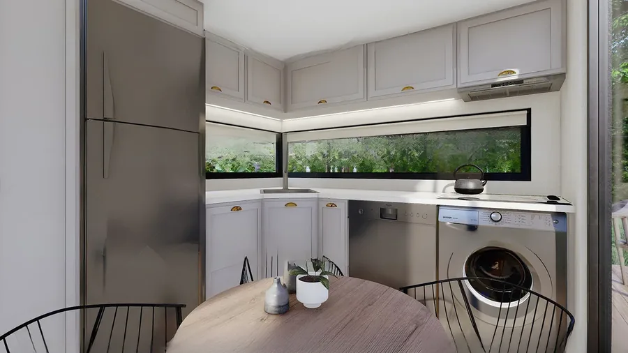

Tiny Houses für Deutschland
Nach eigener Spezifikation gefertigt: acht Tiny-House-Modelle, individuelle Möbel, strukturierte Genehmigungsorientierung und Lieferung je Projekt.
MODUNERA liefert Tiny Houses nach Deutschland, wenn Modell, Route, Dokumente, Zufahrt und Entladung freigegeben sind. Der Standort muss vor Bestellung mit der zuständigen Behörde geklärt werden; wir liefern technische Projektunterlagen, ersetzen aber keine lokale Rechts- oder Genehmigungsberatung.
Tiny-House-Spezialisierung mit breiter Fertigungskompetenz.
Tiny Houses bleiben unser Hauptgeschäft. Modulbau, Stahlkonstruktionen, Containerbau, Bungalows und Möbel nach Maß erweitern die Möglichkeiten für private und gewerbliche Projekte.
Acht Ausgangsmodelle
Schneller Einstieg ohne Individualisierung auszuschließen.
Eigene Möbel
Einbauten werden zusammen mit Grundriss und Technik geplant.
Digitaler Projektstart
Konfigurator, Standortseiten und WhatsApp verkürzen die Erstklärung.
Europa-Logistik
Straße, Tieflader und kombinierte Fähr-/Ro-Ro-Routen werden verglichen.

Was in Deutschland zuerst zu klären ist.
Ein Tiny House wird bei einer auf Dauer angelegten Wohn- oder Gewerbenutzung regelmäßig wie ein bauliches Vorhaben behandelt. Räder allein schaffen keine Genehmigungsfreiheit; Bauplanungsrecht, Landesbauordnung, Grundstück und Nutzung sind mit der zuständigen Behörde zu prüfen.
Länderleitfaden lesen →Amtliche Quelle ↗Ort oder Region auswählen.
Lokale Seiten bündeln Suchintention, Klima, Nutzung, Genehmigung und Lieferung – ohne eine behördliche Freigabe vorzutäuschen.
Baden-Württemberg
Lokale Seiten, Klima, Lieferung und FAQ
BundeslandBayern
Lokale Seiten, Klima, Lieferung und FAQ
BundeslandBerlin
Lokale Seiten, Klima, Lieferung und FAQ
BundeslandBrandenburg
Lokale Seiten, Klima, Lieferung und FAQ
BundeslandBremen
Lokale Seiten, Klima, Lieferung und FAQ
BundeslandHamburg
Lokale Seiten, Klima, Lieferung und FAQ
BundeslandHessen
Lokale Seiten, Klima, Lieferung und FAQ
BundeslandMecklenburg-Vorpommern
Lokale Seiten, Klima, Lieferung und FAQ
BundeslandNiedersachsen
Lokale Seiten, Klima, Lieferung und FAQ
BundeslandNordrhein-Westfalen
Lokale Seiten, Klima, Lieferung und FAQ
BundeslandRheinland-Pfalz
Lokale Seiten, Klima, Lieferung und FAQ
BundeslandSaarland
Lokale Seiten, Klima, Lieferung und FAQ
BundeslandSachsen
Lokale Seiten, Klima, Lieferung und FAQ
BundeslandSachsen-Anhalt
Lokale Seiten, Klima, Lieferung und FAQ
BundeslandSchleswig-Holstein
Lokale Seiten, Klima, Lieferung und FAQ
BundeslandThüringen
Lokale Seiten, Klima, Lieferung und FAQ
Schnelle Antworten, klare Grenzen.
Ja, Lieferungen nach Deutschland werden für das einzelne Projekt angeboten. Modell, Abmessungen, Gewicht, Route, Zollstatus, letzte Zufahrt und Entladung müssen vorab freigegeben werden.
Ein Tiny House wird bei einer auf Dauer angelegten Wohn- oder Gewerbenutzung regelmäßig wie ein bauliches Vorhaben behandelt. Räder allein schaffen keine Genehmigungsfreiheit; Bauplanungsrecht, Landesbauordnung, Grundstück und Nutzung sind mit der zuständigen Behörde zu prüfen.
Nur wenn Fahrgestell beziehungsweise Anhänger, Dokumente, Versicherung, Abmessungen und Gewichte für die gesamte Route passen. Andernfalls wird auf Tieflader oder Sondertransport geplant.
Ein Ro-Ro- oder Fährabschnitt kann Teil der Route sein. Verfügbarkeit, Hafenwahl, Fahrplan, Hafenhandling und Straßen-Nachlauf werden erst für das konkrete Modell und Ziel bestätigt.
Für EU-Ziele können je nach Einreihung und Zollstatus Regeln der EU–Türkiye-Zollunion und ein A.TR-Nachweis relevant sein. Einfuhrumsatzsteuer, Produktanforderungen und nationale Zulassung bleiben gesondert zu prüfen; für die Schweiz gilt ein separates Zollverfahren.
Ja. Tiny Houses sind das Kernprodukt; Küche, Bad, Treppe, Stauraum und Objektmöbel werden im Rahmen von Statik, Gewicht, Haustechnik und Transport maßgefertigt.
Die schnellste Erstaufnahme erfolgt per WhatsApp. Vollständige Angaben zu Ort, Nutzung, Personen, Wunschgröße und Budget verkürzen die Vorprüfung.
Tiny House in Deutschland: die 20 häufigsten Fragen.
Zwanzig Tiny-House-Fragen pro Land – zu Genehmigung, Lieferung, Zoll, Anschlüssen, Winterbetrieb, Kosten und Vermietung. Die Antworten sind Projektorientierung und ersetzen keine Auskunft der zuständigen Behörde.
In der Regel ja. Sobald eine Einheit dauerhaft an einem Ort steht und zum Aufenthalt genutzt wird, gilt sie in Deutschland baurechtlich als bauliche Anlage. Zuständig ist die untere Bauaufsichtsbehörde des Kreises oder der kreisfreien Stadt. Ob ein Verfahren nötig ist und welches, entscheidet sich am konkreten Grundstück – nicht am Produkt.
die untere Bauaufsichtsbehörde des Kreises oder der kreisfreien Stadt. MODUNERA liefert das Gebäude und die technischen Unterlagen; die Entscheidung über Zulässigkeit, Verfahren und Auflagen trifft ausschließlich diese Stelle. Holen Sie die Auskunft schriftlich ein, bevor Sie bestellen.
Maßgeblich ist der Bebauungsplan, ersatzweise die Beurteilung nach § 34 oder § 35 BauGB. Daraus ergeben sich zulässige Nutzungsart, Bauweise, überbaubare Fläche und Erschließung. Ein Grundstück, das für Ihr Vorhaben nicht die richtige Ausweisung hat, lässt sich mit keiner technischen Lösung retten.
Dauerwohnen ist möglich, wenn das Grundstück im Innenbereich liegt oder ein Bebauungsplan Wohnnutzung zulässt und das Vorhaben genehmigt wird. Im Außenbereich nach § 35 BauGB ist Wohnen nur in eng begrenzten Fällen privilegiert – das ist der häufigste Grund, aus dem deutsche Projekte scheitern.
Auf Campingplätzen und in Wochenendhausgebieten gelten eigene Regeln und häufig Aufenthaltsbeschränkungen, die eine ganzjährige Wohnnutzung ausschließen. Prüfen Sie die Satzung des Platzes und die Festsetzungen des Bebauungsplans zusammen.
Die Einstufung folgt der tatsächlichen Nutzung, nicht dem Fahrgestell. Steht die Einheit dauerhaft und dient dem Aufenthalt, behandelt das Baurecht sie in aller Regel als bauliche Anlage – auch mit Rädern und Zulassung.
Als Projektorientierung rechnen wir mit rund 6.800 € ab Werk bis zum vereinbarten Punkt in Deutschland. Der Wert entspricht dem Deutschland-Tarif des Konfigurators. Der Endbetrag hängt von Route, Zufahrt, Kranbedarf und Termin ab; eine Frachtzusage entsteht erst mit dem geprüften Angebot.
Die Einheit wird als Ganzes auf einem Tieflader transportiert. Die Route führt über den Landweg durch Südosteuropa; die reine Fahrzeit liegt im Bereich weniger Tage, die Planung von Ladung, Papieren und Entladefenster bestimmt den Gesamtvorlauf. Der genaue Termin wird zusammen mit dem Entladepunkt festgelegt, weil die letzte Zufahrt in der Praxis öfter das Problem ist als die Strecke.
Türkiye und die EU sind über die Zollunion verbunden. Für Industriewaren mit A.TR-Warenverkehrsbescheinigung fallen in der Regel keine Zölle an; Einfuhrumsatzsteuer und Abwicklungskosten bleiben. Die konkrete Behandlung bestätigt Ihre Zollagentur.
Es gilt der deutsche Umsatzsteuersatz von 19 Prozent auf die Einfuhr. Stand 2026-08-14. Die im Zeitpunkt der Lieferung geltende Regelung ist maßgeblich; die steuerliche Behandlung Ihres konkreten Falls klärt Ihre Steuerberatung.
Punkt-, Streifen- oder Schraubfundament, abhängig von Boden, Frosttiefe und dem, was die Genehmigung verlangt. In Deutschland ist die Frosttiefe regional unterschiedlich; im Norden und in Mittelgebirgslagen wird tiefer gegründet als am Oberrhein. Die Ausführung erfolgt lokal; wir liefern die Lastannahmen und Auflagerpunkte.
Bis zur Grundstücksgrenze durch die örtlichen Versorger, ab dort durch lokale Fachbetriebe. Die Kosten hängen fast ausschließlich von der Entfernung zum vorhandenen Netz ab. In vielen Kommunen ist der Abwasseranschluss der teuerste Einzelposten, wenn kein Kanal in der Nähe liegt.
Technisch machbar, rechtlich standortabhängig: viele Gemeinden verlangen bei genehmigter Wohnnutzung den Anschluss an Wasser und Kanal. Solar und Speicher ersetzen die Erschließung deshalb selten vollständig.
Ja – Deutschland reicht vom milden Oberrhein bis in alpine Schneelastzonen, und genau danach wird ausgelegt. Dämmstärke, Fensterdimensionierung, Lüftung und Heizsystem werden vor der Produktion gemeinsam festgelegt, nicht nachgerüstet.
Nach Heizperiode, Schneelastzone und Windzone am konkreten Ort. Für Dauerwohnen in Bayern oder im Harz liegt die Auslegung spürbar über der für ein Ferienobjekt am Bodensee. Ein Aufbau, der für ein Sommerobjekt genügt, ist für Dauerwohnen an derselben Adresse zu knapp.
Basis ab Werk plus Lieferung ergibt die erste Zahl; dazu kommen Fundament, Anschlüsse, Entladung, örtliche Planung, Genehmigungsgebühren und Versicherung. Rechnen Sie diese Positionen von Anfang an mit, sonst verschiebt sich das Budget nach der Bestellung.
MD 1 und MD 3 werden in Deutschland am häufigsten geplant: MD 1 für Paare und Ferienhäuser mit Aussicht, MD 3, sobald ein abschließbares Zimmer für Homeoffice oder Kind gebraucht wird. Für Familien folgt MD 2.
Kurzzeitvermietung ist in vielen Städten genehmigungs- oder anzeigepflichtig und teilweise durch Zweckentfremdungssatzungen begrenzt. Auf Campingplätzen und in Ferienparks gelten die Regeln des Betreibers zusätzlich.
Transportversicherung für die Anlieferung, Gebäude- beziehungsweise Elementarschadenversicherung für den Betrieb und bei Vermietung eine Betreiberhaftpflicht. Klären Sie den Versicherungsschutz vor der Lieferung – danach ist die Verhandlungsposition schlechter.
Fünf Punkte: schriftliche Auskunft von die untere Bauaufsichtsbehörde des Kreises oder der kreisfreien Stadt zur Zulässigkeit, Zufahrt und Entladepunkt mit Fotos und Maßen, Erschließung und Entfernung zum Netz, Nutzungsart mit Personenzahl, und der Budgetrahmen inklusive der Nebenpositionen. Mit diesen fünf Angaben wird aus einer Anfrage ein planbares Projekt.
Stand 2026-08-14. Alle Angaben sind unverbindliche Projektorientierung und keine Rechts-, Behörden-, Statik-, Energie- oder Steuerberatung. Preise sind Indikationen ab Werk; verbindlich ist ausschließlich ein geprüftes Angebot.